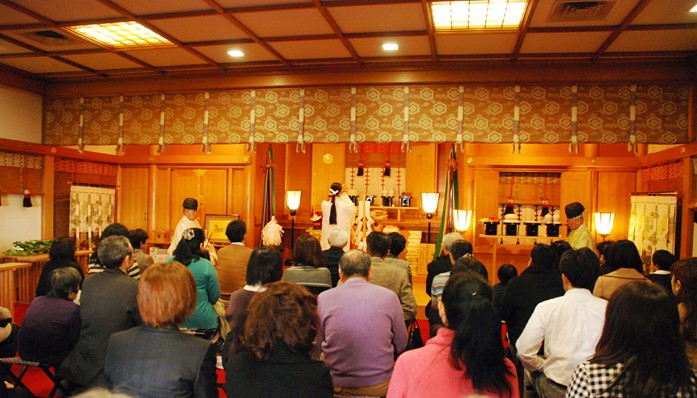
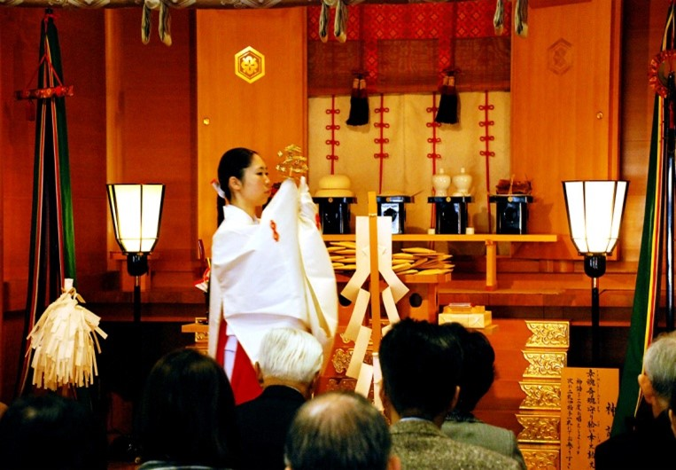
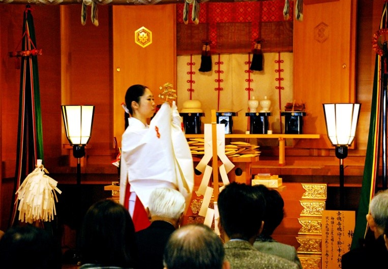

正月のご案内
正月のご案内
投稿日: 2024.12.25
 


新 着 情 報
初春の祭典
元旦祭 並 初神楽祭
令和７年１月１日 午前１０時
初神楽祭のご案内
元日の午前10時に執り行います。この祭典は、古来より出雲大社に伝わる巫女神楽を奉納する特別祈祷です。だいこくさまと一緒に初春を言祝ぎ、新玉の “おとしだま ”を祈念した御神札を授与いたします。
※満席になり次第、受付終了となりますのでご了解くださいませ。
・ご参列は、午前９時４０分までにお越しくださいませ。
・御神楽料は、８，０００円でございます。
・どなた様でもご参列いただけますが、参列席のご予約は受け付けておりません。
（足元が冷えますので、温かい服装でお越しくださいませ）
お正月の空気を胸にすると、嬉しいような楽しいような心持ちになるのが、日本人の情緒ではないでしょうか。清新な空に初日の出を仰げば「この年も佳き年であるように」と誰しもが祈ることだと思います。古くから「一年の計は元旦に在り」と言われるように、年始は一年の指針を固める、極めて貴重な時間です。
出雲大社の信仰には、こうした“はじまり”をとても大切にする特徴があります。それは“はじまり”の以前には必ず理想があり、その理想を実現しようと勇気ある一歩踏み出してこそ“はじまり”という考えがあります。
現実には、移り変わりゆく社会の中で理想を求め続けるのは難しいことだと思います。
しかし、困難を乗り越えようとする情熱は、親近者のみならず、神々の御心にも感応し、御神徳の援けをも与ることでしょう。
元旦祭・初神楽祭において、神語の祈りを捧げ、だいこく様との御神縁をしっかりと結び、新玉のおとしだまを戴いて、幸栄の縁に結ばれた心豊かな一年となりますことをご祈念申し上げます。また、足元が冷えますので、温かい服装でお越しになりますよう、お待ちいたしております。
お問い合わせ
出雲大社東京分祠
〒106-0032 東京都港区六本木7-18-5
TEL: 03-3401-9301
受付時間: 午前9時～午後5時